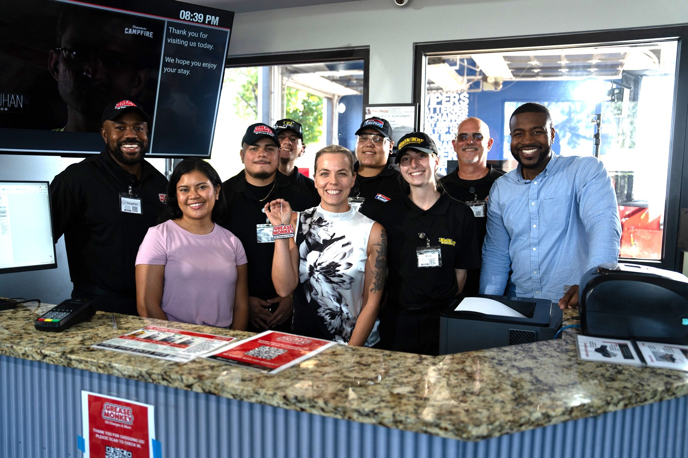

About
The marketer who
actually knows the field.
I didn’t start in marketing. I started in the field.
For years, I called on 40–50 client locations a day at ITW, walked the floor with distributors and franchise operators at NGEN and Throttle Muscle, and built relationships the hard way — by actually showing up. That field grounding became my permanent competitive edge.
At NGEN, I served as National Sales Representative, building deep relationships with franchise locations across the FullSpeed Automotive system. I know how these operations work from the inside — their priorities, their pressure points, what earns their trust and what doesn’t.
Today, at FullSpeed Automotive, I build the strategies and systems that make marketing work at scale and in a voice that is unique to our brands. I’m the person who can walk into a franchisee or operator meeting — for any brand, in any category — speak their language, earn their trust, and then return to the office and design the campaign that moves the needle. I’ve stepped into Director and VP-level responsibilities, partnered with executive leadership, and led internal teams and agency partners to deliver work that drives measurable business outcomes. That combination of field credibility, strategic execution, and operational leadership is rare, and it travels.
I’m based in Madison, WI — and yes, I work remotely. Fully, effectively, and without missing a beat.
Field-to-franchise fluency — built in, not briefed.
Franchise partners can spot a corporate marketer who’s never actually worked at the location level. I’m not that person. I’ve earned trust in the field — as a vendor, a sales rep, and a strategic partner — long before I was writing briefs and building campaigns. That history gives me something most brand marketers don’t have: credibility in the room where decisions actually get made.

“In the field — because great brand strategy starts with knowing the product.”